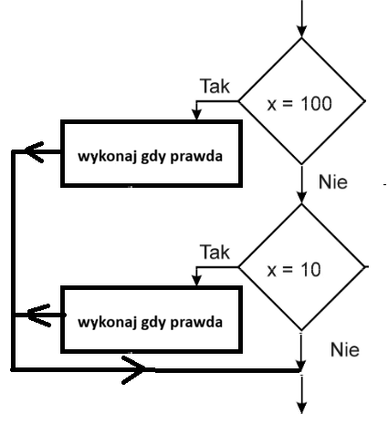
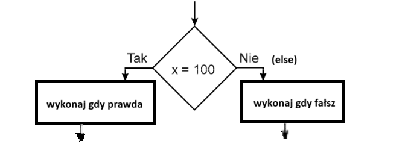

if (warunek_logiczny1) { instrukcje jeśli warunek_logiczny1 prawdziwy }
if (warunek_logiczny2) { instrukcje jeśli warunek_logiczny2 prawdziwy }

if (warunek_logiczny) { instrukcje jeśli warunek_logiczny prawdziwy }
else { instrukcje jeśli warunek_logiczny fałszywy }

| Operator | Opis | Przykład |
|---|---|---|
| == | jest równe | 2==3 → fałsz |
| != | nie jest równe | 2!=3 → prawda |
| > | jest większe | 25>3 → prawda |
| < | jest mniejsze | 2<3 → prawda |
| >= | większe lub równe | 25>=3 → prawda |
| <= | mniejsze lub równe | 2<=3 → prawda |
Należy odróżnić == od =
== oznacza porównanie wartości
= oznacza przypisanie wartości, np. a = 5;
| Operator | Opis | Przykład |
|---|---|---|
| && | i | (x<9 && y>2) → prawda |
| || | lub | (x==8 || y==6) → fałsz |
| ! | zaprzeczenie | !(x==y) → prawda |